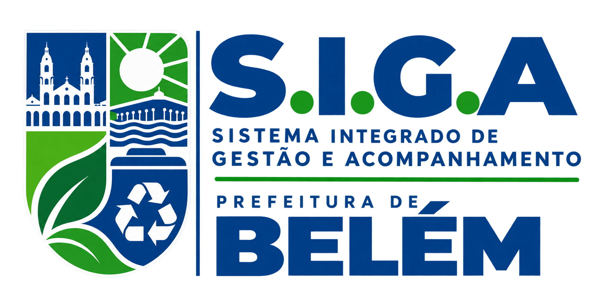
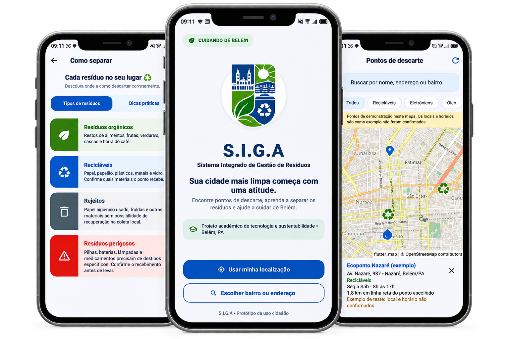
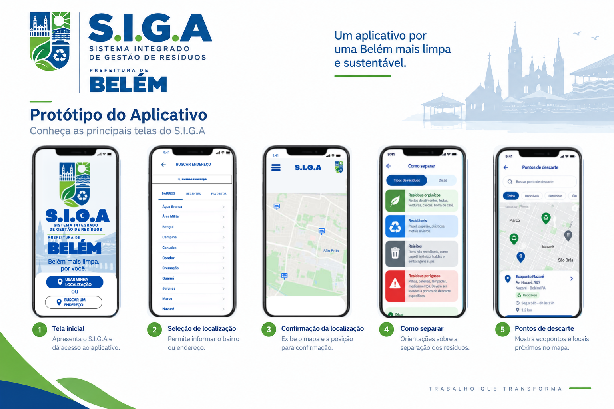

Acompanhamento da coleta
Visualize informações da coleta e acompanhe o serviço na sua região.

S.I.G.A • Belém Conhecer o appO S.I.G.A reúne informações sobre coleta de resíduos, localização, pontos de descarte e orientações para ajudar a população a cuidar melhor da cidade.

O S.I.G.A — Sistema Integrado de Gestão e Acompanhamento foi pensado para centralizar informações úteis sobre a coleta e o descarte de resíduos em Belém, oferecendo uma experiência simples, visual e intuitiva.
Visualize informações da coleta e acompanhe o serviço na sua região.
Encontre ecopontos e locais adequados próximos de você.
Aprenda a identificar e separar corretamente cada tipo de resíduo.
Estas são algumas das principais telas do protótipo do S.I.G.A.

Telas do protótipo acadêmico • imagens sujeitas a atualizações conforme a evolução da interface.
Use sua localização ou pesquise um endereço.
Veja serviços e informações disponíveis no mapa.
Encontre pontos de descarte e orientações sobre resíduos.
Adote práticas corretas e ajude a construir uma cidade mais limpa.
Uma solução desenvolvida com ferramentas para aplicativos móveis, mapas e serviços web.
Mais consciência, mais organização e mais acesso à informação para apoiar uma Belém sustentável.
Tecnologia e consciência trabalhando juntas para cuidar de Belém.
Voltar ao início ↑